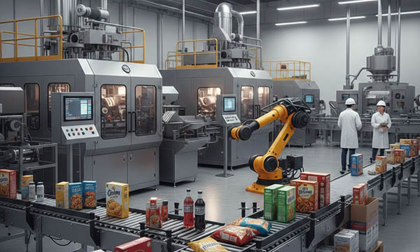

The packaging and food processing industry is a high-speed environment where hygiene, operational efficiency, and rapid changeovers are the keys to profitability. In Germany, a global leader in specialized packaging machinery, as well as in Italy, France, Poland, the Netherlands, Austria, Switzerland, the United Kingdom, and Norway, the production of food, beverages, and dairy products relies on highly automated systems. From complex bottling plants and dairy processing units to high-speed pharmaceutical packaging lines and craft brewery equipment, industrial components must meet rigorous safety and sanitary standards. In these wash-down environments, machines face constant exposure to water, steam, high temperatures, and aggressive cleaning chemicals (CIP – Cleaning-in-Place). Professional hygienic machine labels, engraved valve markers, flow direction signs, changeover instructions plates, control panel overlays, and stainless-steel look rating plates are essential for uninterrupted production. At SignXpert, we provide high-durability, food-safe, and chemically resistant labeling solutions for the packaging and food industry in Germany and across Europe.
The Food and Packaging Sector: Engineering Excellence in Germany and Europe
Germany and Italy are internationally recognized for their excellence in packaging and bottling technology. France and the Benelux countries lead in food processing innovation, Poland is a major hub for large-scale food production, and Switzerland specializes in precision machinery for the pharmaceutical packaging sector. Austria and Norway maintain strong standards in dairy and maritime food processing. Across all these markets, equipment must comply with strict hygiene regulations and European safety directives (CE marking, Machinery Directive). Clear industrial rating plates, technical data tags, and safety decals ensure that every machine is traceable and compliant with international food safety standards. SignXpert supports manufacturers primarily in Germany, while delivering fast and reliably to France, Italy, Switzerland, the UK, Norway, Austria, Poland, and the Benelux countries.
Packaging Lines: Enhancing Changeover Efficiency and Branding
In modern packaging, machines must be reconfigured frequently for different product formats. Downtime is the enemy of productivity.
- Changeover Instruction Plates: We produce durable, engraved “setup guides” and scale markers that are mounted directly on the machine. These help operators in Germany or Poland perform fast, error-free adjustments.
- Control Panel Labeling: High-contrast, easy-to-read labels for buttons and switches ensure that machine functions are understood instantly, reducing operational errors on high-speed bottling lines.
- Branding & Logo Plates: For manufacturers of premium packaging machinery, a professional engraved brand plate reflects the quality of the engineering and ensures the manufacturer’s contact details are always available for service and spare parts.
Food & Dairy Industry: Hygiene and Chemical Resilience
Equipment in dairies, breweries, and meat processing plants is subjected to daily “wash-down” procedures. Labels must withstand hot water, high pressure, and caustic cleaning agents without degrading.
- Brewery & Dairy Markers: Engraved labels for tanks, kers, and processing units that are resistant to yeast, lactic acid, and chemical disinfectants.
- Fluid Identification: Color-coded markers and engraved arrows for piping systems ensure that operators can instantly identify lines for product, water, steam, or cleaning solutions.
- Non-Porous Materials: SignXpert uses high-tech polymers that do not trap bacteria or moisture, meeting the high sanitary expectations of the European food industry.
Smart Operations: QR Codes and Asset Management
Efficiency in modern food plants depends on digital integration. QR code asset tags from SignXpert allow maintenance teams to scan a pump or a filling station and instantly access maintenance manuals, lubrication schedules, or spare parts catalogs in their local language.
By using laser engraving, we ensure that these codes remain scannable for the entire lifecycle of the equipment, even after years of exposure to the humid and oily environments of a food production hall.
Why SignXpert is the Trusted Partner for the Food and Packaging Industry
SignXpert is a specialized supplier of hygienic labels, engraved type plates, instruction markers, and safety signage for the packaging and food processing sectors.
Our primary focus is the German market, with fast and dependable delivery across France, Italy, Switzerland, the United Kingdom, Norway, Austria, Poland, and the Benelux region.
Through our advanced online editor, production engineers can easily design custom sets for bottling lines, upload technical data for batch marking, and select materials that are specifically tested for chemical and moisture resistance.
Choosing SignXpert ensures that your food and packaging equipment is marked with the highest standard of durability, helping you improve safety, reduce downtime, and maintain compliance across the European market.